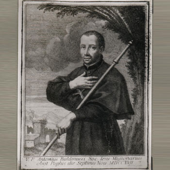

Isusovački blaženici
Isusovac · Svećenik · Pučki misionar
Bl. Antun Baldinucci
1665.–1717.
Talijanski pučki misionar zbog slaboga zdravlja ostao je u domovini, gdje je propovijedanjem, ispovijedanjem i duhovnim vježbama neumorno služio župama gradova i sela.
Tekst je preveden i prilagođen uz pomoć umjetne inteligencije.

Izvor slike
- Spomendan
- 7. studenoga
- Zaštitništvo
- Nije navedeno u izvoru
- Životni vijek
- 1665.–1717.
- Djelovanje
- Misije i evangelizacija · Duhovno vodstvo i razlučivanje · Euharistija i pobožnosti · Bolest i osobne kušnje
- Razdoblje
- 17., 18. stoljeće
- Ulazak u Družbu
- 1681., Rim
- Područje služenja
- Frascati, Viterbo i talijanske biskupije
- Smrt
- 7. studenoga 1717., Pofi
U kalendaru zbirke koristi se dan smrti. Taj datum nije zasebna potvrda liturgijskoga spomendana.
Životopis
Antun Baldinucci rođen je 1665. u Firenci. U rimski novicijat Sant’Andrea ušao je 1681., a za svećenika je zaređen 1695. Želio je djelovati u Indiji, Kini ili Japanu, no krhko zdravlje zatvorilo mu je taj put. Još je za studija teologije u Rimu na trgovima pozivao ljude na misije. Nakon završne redovničke priprave posvetio se pučkim misijama u Italiji; od 1697. njegova su uporišta bili Frascati i Viterbo.
U dvadeset godina obišao je tridesetak biskupija. Misije su obično trajale od osam do četrnaest dana i slijedile duhovnu dinamiku Duhovnih vježbi: propovijed i kateheza vodile su ispovijedi, pomirenju i zajedničkoj pričesti. Putovao je bos, sa štapom i skromnom prtljagom. Procesije, križ i javna pokora pripadali su izražajnom načinu propovijedanja njegova vremena. Sudionici su ostavljali oružje, a završetak je znao uključivati spaljivanje predmeta povezanih s kockom i drugim porocima.
Njegovo djelovanje nije bilo ograničeno na velike skupove. Osobito je širio marijansku pobožnost i sa sobom nosio Gospinu sliku. U organizaciju okupljanja uključivao je laičke suradnike; djelovao je i među klerom. Uz putovanja i ispovijedanje pripremao je korizmene propovijedi, sastavljao govore i vodio opsežnu korespondenciju.
Posljednju misiju započeo je u Pofiju 18. listopada 1717., već bolestan. Dana 26. listopada morao je leći; umro je 7. studenoga. Postupak crkvenoga priznanja njegova života započeo je 1753., a blaženim je proglašen 1893.
Tekst je preveden i prilagođen uz pomoć umjetne inteligencije.
Pročitaj više na izvornoj stranici ↗